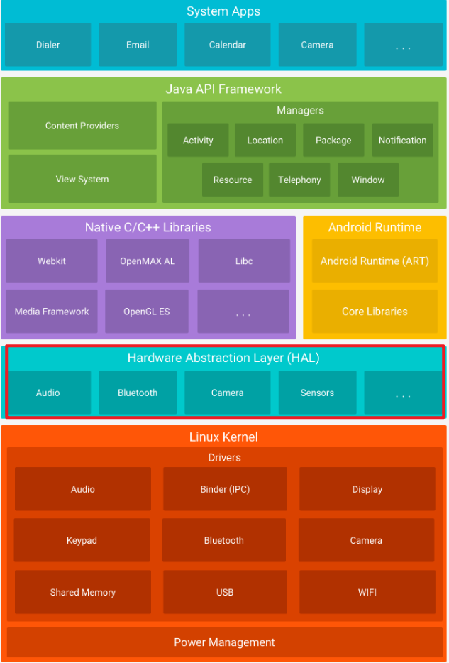

HAL称之为Hardware Abstraction Layer，硬件抽象层。也就是说，厂商把硬件的所有底层寄存器操作封装成各种API(Application Programmable Interface)和抽象类（用结构体实现的类似Class操作），供上层应用调用。上层开发无需关心底层是如何实现的，只需要调用它们即可。
HAL不仅是STM32中的一个库，而且还是操作系统的基本组成部分。
 安卓系统的架构，HAL是仅次于操作系统内核的Layer，管理各种如音频、蓝牙、相机、传感器、网络等底层硬件
ST官方的HAL库可从此处下载
STM32F1: https://github.com/STMicroelectronics/stm32f1xx_hal_driver/
STM32F4: https://github.com/STMicroelectronics/stm32f4xx_hal_driver/
STM32H7: https://github.com/STMicroelectronics/stm32h7xx_hal_driver/
HAL库中有几个比较基础的概念，可能之前都是稀里糊涂用，但是现在必须要搞清楚。
- 句柄：
句柄
在编码标准中我提到一点，不能通过句柄指针和地址是否相等来判断是那个外设的句柄。虽然在HAL库中是通过指针传递的，大部分情况下都是相等的，但是如果在某些函数中传递的是句柄变量而不是指针，那么编译器会重新给参数重新分配一个结构体变量。这就会导致传递的参数变量地址与原句柄地址不一致。以下面的代码举例：
#include "stdint.h"
#include "stdio.h"
#define SDIO1 0x00000000U
typedef struct {
uint32_t Instance;
uint32_t ClockEdge;
} SDIO_HandleTypeDef;
void SDIO_Init(SDIO_HandleTypeDef hsdio1);
void SDIO_MspInit(SDIO_HandleTypeDef *hsdio1);
SDIO_HandleTypeDef g_sdio_handler;
int main(int argc, char const *argv[]) {
g_sdio_handler.Instance = SDIO1;
SDIO_Init(g_sdio_handler);
return 0;
}
void SDIO_Init(SDIO_HandleTypeDef hsdio1) {
SDIO_MspInit(&hsdio1);
}
void SDIO_MspInit(SDIO_HandleTypeDef *hsdio2) {
if (hsdio2->Instance == SDIO1) {
printf("SDIO_Handler->Instance == SDIO1\n");
}
if (hsdio2 == &(g_sdio_handler)) {
printf("sdio address is g_sdio_handler\n");
} else {
printf("hsdio=0x%p, g_sdio_handler=0x%p\n", (void *)hsdio2,
(void *)(&g_sdio_handler));
}
}
可以自己运行一下结果是什么。这里我截取了SDIO句柄结构体的一部分，并声明了两个函数：其中SDIO_Init()函数传入的是句柄变量，SDIO_MspInit()传入的是句柄指针。SDIO_Init()函数会调用SDIO_MspInit()。
首先main调用SDIO_Init()函数，传入句柄变量，由于传入的是变量，这就导致在SDIO_Init函数中的hsdio1与g_sdio_handler的地址已经不相等了，编译器给hsido1重新分配了一块内存空间。
随后在SDIO_MspInit()函数中，第一个if判断的是Instance成员是否相等，那么结果显而易见是相等的。但第二个if就不一样了，上面说过了，编译器给hsdio1重新分配了一块内存空间，与g_sdio_handler的地址肯定不相等。
就算参数传入的不是句柄变量，一些第三方库或者自己写的代码可能会用malloc之类的函数重新分配句柄内存空间，然后传入下一个函数，这样一来依赖变量地址来判断外设句柄就显得不可靠了。因此在HAL库中的MspInit, Callback之类需要句柄的函数最好使用Instance成员判断，不要使用地址判断。